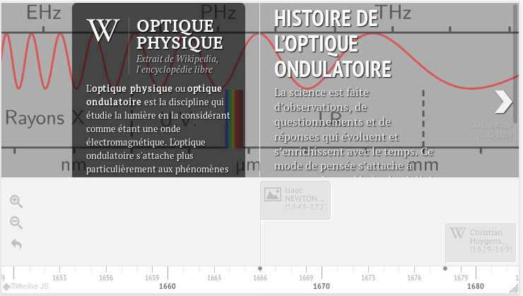

h5p: 1060965078
Le parcours scientifique d’Alan Turing
En utilisant comme source l’article «Alan Turing itinéraire d’un précurseur», écrire un résumé de 10-20 lignes expliquant les divers sujets qu’a étudiés Alan Turing au cours de sa vie.
Créez votre propre frise
Créez votre histoire de l’informatique en utilisant les sources données dans le cours, et en réalisant une frise chronologique grâce à la librairie javascript TimelineJS
Recherche documentaire
Pour cela vous allez devoir dans un premier temps concevoir sur le papier votre frise en sélectionnant les éléments les plus signifiants, en les ordonnant. N’oubliez pas de noter également vos sources de texte et d’images(libres de droit dans le cas d’une publication sur la toile).
Création de la frise interactive
Vous intégrerez ensuite vos éléments au sein d’un fichier de données csv(comma separated values, soit valeurs séparées par des virgules) que vous éditerez avec un tableur(LibreOffice de préférence).
Voici un exemple de rendu d’une frise avec timeline.js.
.
Vous pouvez visualiser le fichier csv de données qui a permis de créer cette frise à cette adresse: https://framagit.org/lyceum/timelinejs-local/-/blob/master/src/timeline-data.csv.
La particularité de la librairie TimelineJS, est qu’elle permet d’ajouter eu plus du simple texte, des médias issus de diverses sources: Wikipedia, Youtube, SoundCloud, Instangram, Tweeter… (lien vers la liste complète sur knightlab.com)
Voici la signification des entrées de ce tableau de données:
Clef
|
Rôle
|
|---|---|
date |
année de la découverte ou de l’invention(obligatoire sauf pour la vignette de titre) |
type |
laisser vide pour un événement normal et indiquer titre pour la vignette de titre de la frise. |
titre |
titre de la vignette. |
texte |
texte à inclure dans la vignette. |
mediaUrl |
adresse de l’élément media(exemple: https://fr.wikipedia.org/wiki/Pascaline, ou localement: mon-image.jpg) |
mediaCredit |
auteur et licence du média intégré |
mediaLegend |
légende à ajouter au media |
mediaThumbnail |
vignette à utiliser pour afficher la vignette sur la frise, si vide, une vignette par défaut est ajouté en fonction du média(exemple: logo Youtube pour les média youtube) |
backgroundUrl |
adresse url d’une image à utiliser pour le fond de la vignette. |
backgroundColor |
couleur du fond de la vignette, vous pouvez utiliser une couleur héxadécimale #RRGGBB ou avec transparence #RRGGBBaa, ou simplement un nom de couleur css comme white, lime… lien vers la liste complète des couleurs sur MDN |
Pour créer votre frise, téléchargez le dossier compressé du code de la frise d’exemple à l’adresse suivante: https://framagit.org/lyceum/timelinejs-local/-/archive/master/timelinejs-local-master.zip, puis éditez le fichier timeline-data.csv avec le tableur.
Observez le rendu dans le navigateur en ouvrant le fichier index.html et en rafraîchissant la page à chaque changement(CTRL+R).
A vos claviers!